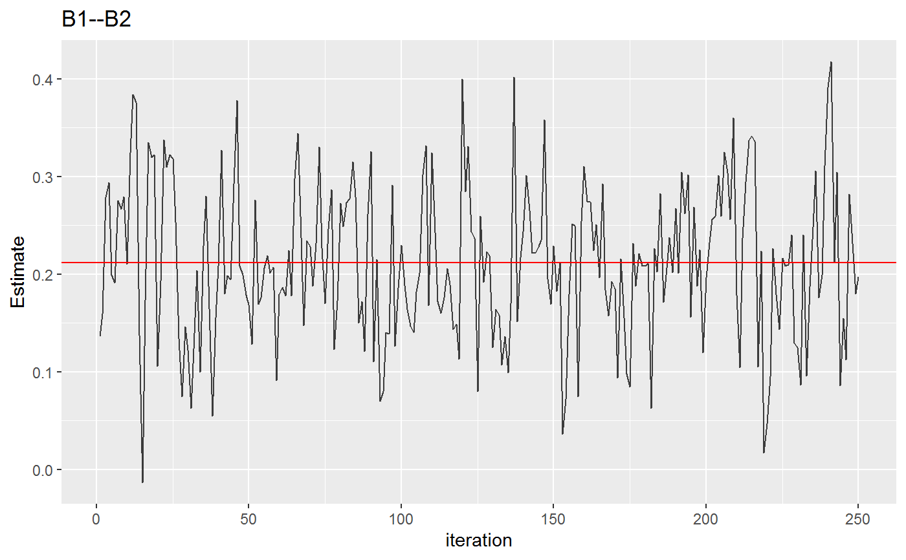

MCMC Convergence
convergence.RdMonitor convergence of the MCMC algorithms.
convergence(object, param = NULL, type = "trace", print_names = FALSE)
Arguments
| object | An object of class |
|---|---|
| param | Character string. Names of parameters for which to monitor MCMC convergence. |
| type | Character string. Which type of convergence plot ? The current
options are |
| print_names | Logical. Should the parameter names be printed (defaults to |
Value
A list of ggplot objects.
Note
An overview of MCMC diagnostics can be found here.
Examples
# \donttest{ # note: iter = 250 for demonstrative purposes # data Y <- ptsd ######################### ######## ordinal ######## ######################### fit <- estimate(Y + 1, type = "ordinal", iter = 250)#>#># print names first param_names <- convergence(fit, print_names = TRUE)#> [1] "B1--B2" "B1--B3" "B2--B3" "B1--B4" #> [5] "B2--B4" "B3--B4" "B1--B5" "B2--B5" #> [9] "B3--B5" "B4--B5" "B1--C1" "B2--C1" #> [13] "B3--C1" "B4--C1" "B5--C1" "B1--C2" #> [17] "B2--C2" "B3--C2" "B4--C2" "B5--C2" #> [21] "C1--C2" "B1--D1" "B2--D1" "B3--D1" #> [25] "B4--D1" "B5--D1" "C1--D1" "C2--D1" #> [29] "B1--D2" "B2--D2" "B3--D2" "B4--D2" #> [33] "B5--D2" "C1--D2" "C2--D2" "D1--D2" #> [37] "B1--D3" "B2--D3" "B3--D3" "B4--D3" #> [41] "B5--D3" "C1--D3" "C2--D3" "D1--D3" #> [45] "D2--D3" "B1--D4" "B2--D4" "B3--D4" #> [49] "B4--D4" "B5--D4" "C1--D4" "C2--D4" #> [53] "D1--D4" "D2--D4" "D3--D4" "B1--D5" #> [57] "B2--D5" "B3--D5" "B4--D5" "B5--D5" #> [61] "C1--D5" "C2--D5" "D1--D5" "D2--D5" #> [65] "D3--D5" "D4--D5" "B1--D6" "B2--D6" #> [69] "B3--D6" "B4--D6" "B5--D6" "C1--D6" #> [73] "C2--D6" "D1--D6" "D2--D6" "D3--D6" #> [77] "D4--D6" "D5--D6" "B1--D7" "B2--D7" #> [81] "B3--D7" "B4--D7" "B5--D7" "C1--D7" #> [85] "C2--D7" "D1--D7" "D2--D7" "D3--D7" #> [89] "D4--D7" "D5--D7" "D6--D7" "B1--E1" #> [93] "B2--E1" "B3--E1" "B4--E1" "B5--E1" #> [97] "C1--E1" "C2--E1" "D1--E1" "D2--E1" #> [101] "D3--E1" "D4--E1" "D5--E1" "D6--E1" #> [105] "D7--E1" "B1--E2" "B2--E2" "B3--E2" #> [109] "B4--E2" "B5--E2" "C1--E2" "C2--E2" #> [113] "D1--E2" "D2--E2" "D3--E2" "D4--E2" #> [117] "D5--E2" "D6--E2" "D7--E2" "E1--E2" #> [121] "B1--E3" "B2--E3" "B3--E3" "B4--E3" #> [125] "B5--E3" "C1--E3" "C2--E3" "D1--E3" #> [129] "D2--E3" "D3--E3" "D4--E3" "D5--E3" #> [133] "D6--E3" "D7--E3" "E1--E3" "E2--E3" #> [137] "B1--E4" "B2--E4" "B3--E4" "B4--E4" #> [141] "B5--E4" "C1--E4" "C2--E4" "D1--E4" #> [145] "D2--E4" "D3--E4" "D4--E4" "D5--E4" #> [149] "D6--E4" "D7--E4" "E1--E4" "E2--E4" #> [153] "E3--E4" "B1--E5" "B2--E5" "B3--E5" #> [157] "B4--E5" "B5--E5" "C1--E5" "C2--E5" #> [161] "D1--E5" "D2--E5" "D3--E5" "D4--E5" #> [165] "D5--E5" "D6--E5" "D7--E5" "E1--E5" #> [169] "E2--E5" "E3--E5" "E4--E5" "B1--E6" #> [173] "B2--E6" "B3--E6" "B4--E6" "B5--E6" #> [177] "C1--E6" "C2--E6" "D1--E6" "D2--E6" #> [181] "D3--E6" "D4--E6" "D5--E6" "D6--E6" #> [185] "D7--E6" "E1--E6" "E2--E6" "E3--E6" #> [189] "E4--E6" "E5--E6" "B1_(Intercept)" "B2_(Intercept)" #> [193] "B3_(Intercept)" "B4_(Intercept)" "B5_(Intercept)" "C1_(Intercept)" #> [197] "C2_(Intercept)" "D1_(Intercept)" "D2_(Intercept)" "D3_(Intercept)" #> [201] "D4_(Intercept)" "D5_(Intercept)" "D6_(Intercept)" "D7_(Intercept)" #> [205] "E1_(Intercept)" "E2_(Intercept)" "E3_(Intercept)" "E4_(Intercept)" #> [209] "E5_(Intercept)" "E6_(Intercept)"# }